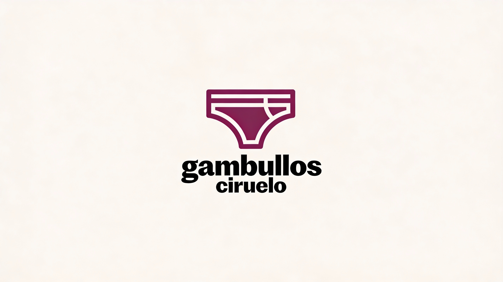

Modelo Ciruelo Classic

Calzoncillo básico y muy cómodo para el día a día.
Precio : 9.99 €

Gallumbos Ciruelo es una marca de ropa interior centrada en la comodidad diaria y en un estilo desenfadado, fresco y divertido. Está pensada para personas jóvenes y adultas que quieren sentirse cómodas todo el día, sin renunciar a un diseño con personalidad.
La marca se dirige especialmente a quienes buscan calzoncillos suaves, transpirables y resistentes, que sirvan tanto para el día a día como para momentos más especiales. Su público ideal valora la comodidad, pero también quiere que su ropa interior tenga un toque diferente y no sea aburrida.
Gallumbos Ciruelo se diferencia de otras marcas por combinar tejidos de calidad con diseños originales y atrevidos, manteniendo siempre un precio accesible. Además, su identidad tiene un tono cercano y humorístico, lo que hace que la marca se sienta más humana y distinta a las marcas tradicionales y serias.
Calzoncillo básico y muy cómodo para el día a día.
Precio : 9.99 €

Fabricado con materiales suaves y respetuosos con el medio ambiente.
Precio : 13.49 €

Tejido técnico y transpirable, ideal para hacer deporte.
Precio : 14.99 €

Diseño elegante y oscuro, pensado para momentos más especiales.
Precio : 12.99 €

Colores vivos y estampados divertidos para quienes quieren algo diferente.
Precio : 11.49 €
Fabricado en españa, Diseño ergonomico, Algodon 100% natural.